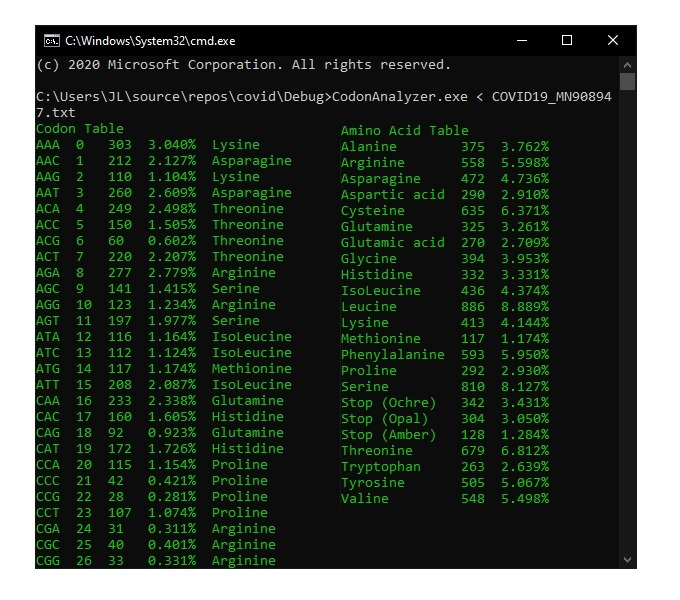
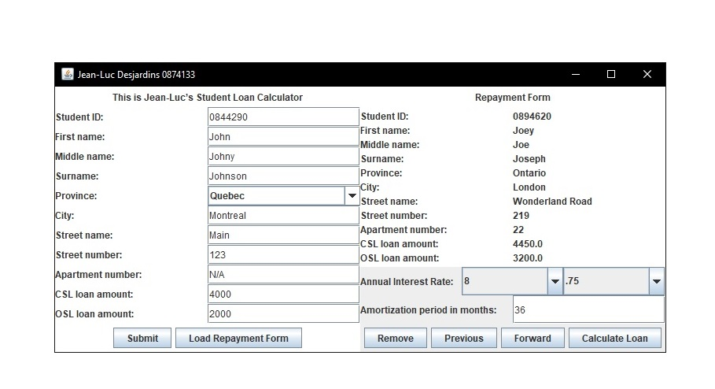
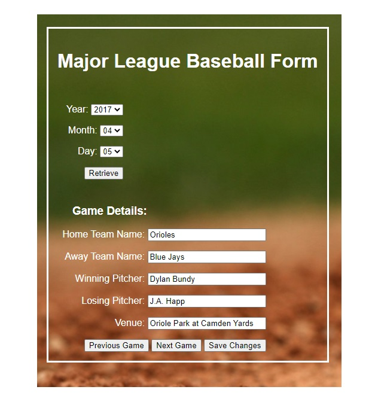
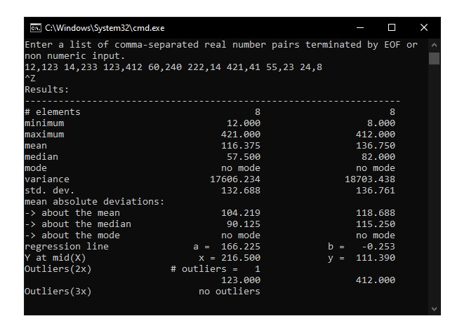

A C++ console application inspired by the researchers trying to create a vaccine for Corona. Codon Analyzer takes a nucleotide sequence
and determines the amount and type of codons and amino acids found in a DNA sequence. The nucleotide sequence used to
test this application was the complete genome of coronavirus 2 isolate Wuhan-Hu-1.

This is a student loan calculator created using Java. The app shows how modifying repayment schedules would affect the loan cost in terms of the amount of interest that the student would pay.
An object-orientated approach was taken to build this project. Student Loan Calculator incorporates classes and interfaces as well as some exception handling. It was my first GUI using javax.swing and
helped reinforce object-orientated concepts.

Major League Baseball Info Retriever was created using Javascript. An AJAX asynchronous
XMLHttpRequest is sent to the MLB site which gets converted into an object. The object is then used to display
game information to the user.
This program got me familiar with JavaScript Object Notation.

A command line application built in C that reads number pairs from a file or from the keyboard then calculates minimum value, maximum value,
median value, arithmetic mean, mean absolute deviation – (mean, median, mode),
variance (of a discrete random variable), standard deviation (of a finite population),
mode, least squares regression line and outliers(2x and 3x). This project taught me about dynamic memory management and memory leaks.